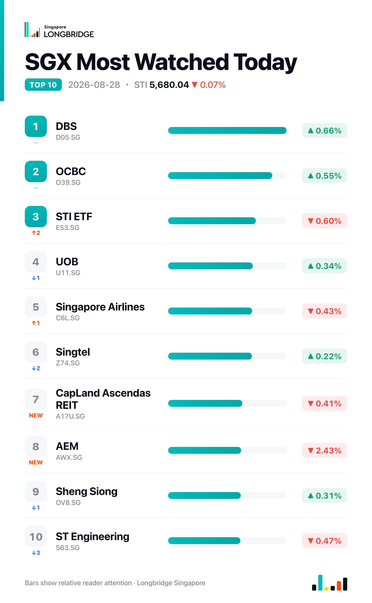

STI Slips 0.07% to 5,680.04 as Banks Rebound; Frasers L&C Leads REIT Retreat
The Straits Times Index closed at 5,680.04 on Friday, down 4.08 points, or 0.07%, after touching an intraday high of 5,700.52 and finishing closer to the session's low of 5,673.55. Decliners outpaced advancers 17 to 8 among the benchmark's 30 constituents, with five names unchanged, as broad weakness across REITs offset a synchronized advance in all three local banks and a lead from Wilmar.
Friday's session opened against a firmer overnight backdrop, with Nvidia's record quarterly results lifting US technology shares after hours. Locally, DBS, OCBC and UOB all advanced together — up 0.66%, 0.55% and 0.34% respectively — breaking a two-session synchronized retreat that had run through Wednesday and Thursday. REIT-heavy names moved the other way, with Frasers Logistics & Commercial Trust leading decliners at 1.59% as CapitaLand Ascendas REIT, CapitaLand Integrated Commercial Trust and other trust names also eased. The offsetting moves left the index little changed, with attention turning to Fed Chair Kevin Warsh's Jackson Hole keynote later Friday.
Session Movers
Wilmar International (F34.SG, +1.06%) led the basket's advancers, still digesting an Aug. 14 first-half update showing net profit up 2.3% to $779.4 million on revenue up 17.2% to $49.36 billion, boosted by the consolidation of AWL Agri Business and higher prices. Feed & industrial products pre-tax profit surged 55% and food products profit rose 56%, while plantation and sugar milling profit fell 32% on weak sugar prices and impairment losses; the board approved a 5-cent-a-share interim dividend. The company also confirmed this month that a unit sold 50% stakes in two China-based Kellogg food ventures to Mars Wrigley for US$60 million. There was no fresh disclosure Friday. Consensus rates the stock Buy with a S$3.83 target, implying about 0.6% upside, with shares trading at 12.81 times earnings — cheaper than roughly 43% of the past year.
DBS (D05.SG, +0.66%) advanced after naming insider Kyle Tan managing director and head of global financial markets for its Hong Kong arm on Friday, succeeding Jeremy Kok, who moves to head group structuring for Singapore and North Asia trading, as the bank builds out its Greater China presence. The appointment followed Thursday's disclosure of a partnership with Stripe to expand cross-border payments across Asia. Shares trade at 3.06 times book, near the top of their five-year range and cheaper than only about 1.3% of the past five years; consensus rates the stock Buy with a S$76.73 target, implying roughly 0.8% upside.
OCBC (O39.SG, +0.55%) rose in step with the rest of the banking sector, with no stock-specific catalyst Friday. The most recent company news was its role as a joint lead manager on Frasers Property Treasury's S$150 million fixed-rate note issue priced Wednesday, alongside UOB Kay Hian's reaffirmed Buy rating on Tuesday. Shares trade at 2.17 times book, near the top of their five-year range and cheaper than less than 1% of the past five years; consensus rates the stock Buy with a S$31.27 target, implying about 0.6% upside.
Frasers Logistics & Commercial Trust (BUOU.SG, -1.59%) was the session's weakest constituent, extending broader REIT-sector softness with no fresh disclosure Friday. Its most recent business update, released July 30, showed positive third-quarter rental reversions of 8.2% led by the logistics and industrial segment, portfolio occupancy of 96.1% and a S$7.1 billion portfolio value, alongside the completed acquisition of four European logistics properties for a combined S$441.5 million; a day later it issued 5.35 million new units at S$0.99 to help settle S$7.04 million in management fees. Shares trade at 0.843 times book, cheaper than roughly 92% of the past year; consensus rates the stock Buy with a S$1.10 target, implying about 18% upside.

One point worth noting
Friday's breadth ran well ahead of the index move: decliners outpaced advancers 17 to 8, with five names unchanged, even as the STI finished just 0.07% lower. The gap was cushioned mainly by Wilmar, SGX and Yangzijiang Shipbuilding alongside the synchronized bank advance — a handful of large-cap gainers keeping the benchmark close to flat while the broader tape leaned negative, a pattern that has recurred through much of August.
This recap is for informational purposes only and does not constitute investment advice.